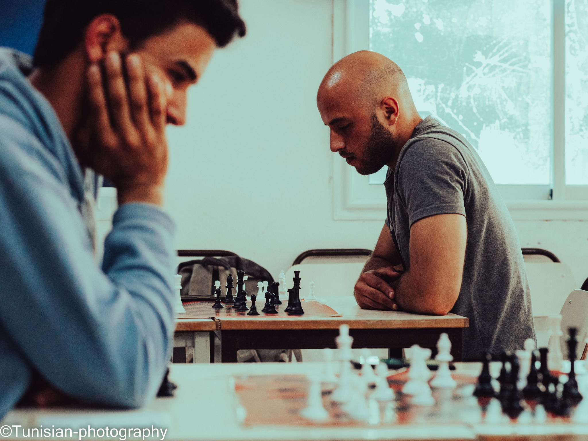
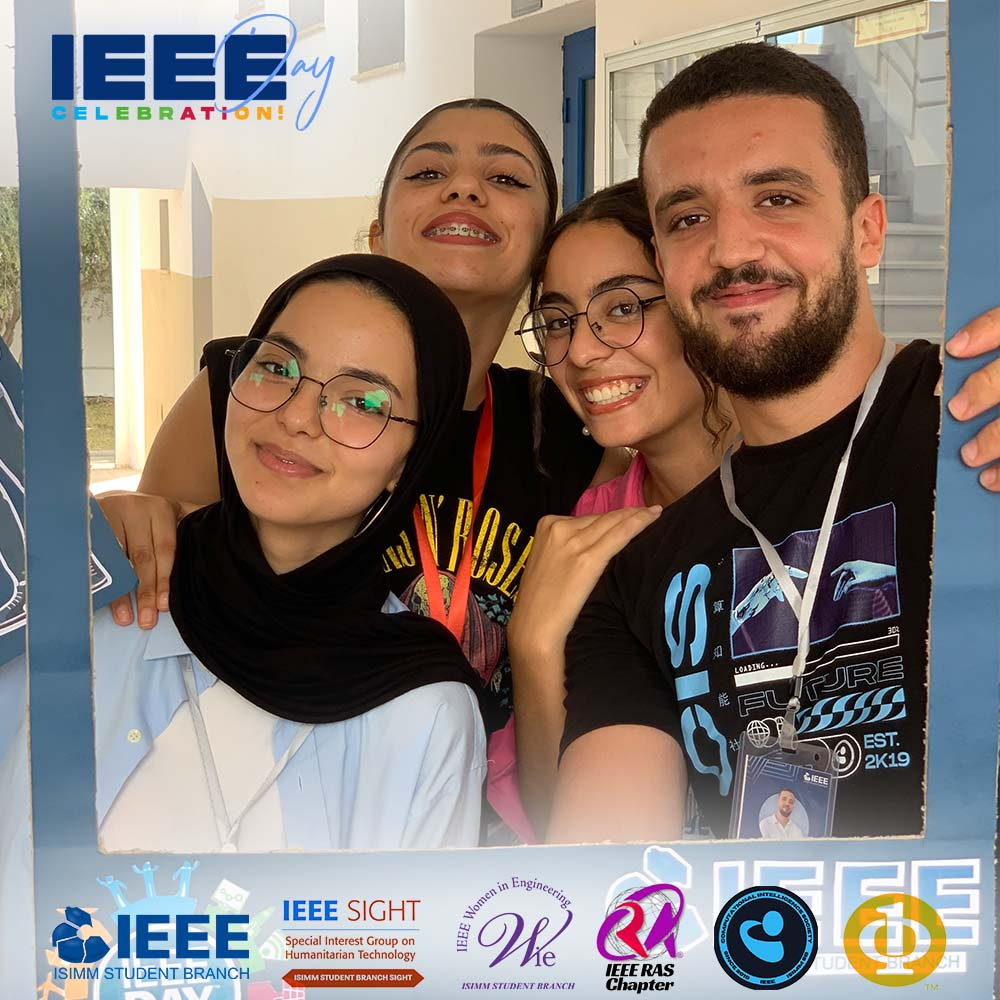

Un Écosystème Enrichissant, Où l'Innovation Rencontre la Solidarité
L'ISIMM incarne un véritable foyer de vie associative, où les étudiants s'épanouissent dans une ambiance dynamique et collaborative. Au cœur de cette institution, la vie associative est le pilier central qui forge des expériences inoubliables et construit des liens durables. Les clubs et associations, tels que le club informatique, le club de robotique, et bien d'autres, offrent un terrain propice à l'épanouissement personnel et professionnel. Cette richesse associative contribue à forger des compétences transversales, à renforcer l'esprit d'équipe et à cultiver un environnement où la créativité et l'innovation sont constamment encouragées.

Les étudiants bénéficient d'un large éventail d'activités, allant de compétitions techniques mettant en avant leurs compétences informatiques et multimédias, à des événements culturels enrichissants. Les clubs et associations organisent des formations pointues, permettant aux membres d'approfondir leurs connaissances tout en favorisant l'apprentissage collaboratif.


Cette atmosphère d'émulation contribue à former des professionnels aguerris, prêts à relever les défis de l'industrie informatique et multimédia. Ainsi, la vie associative à l'ISIMM se révèle être un terreau fertile où la formation, les compétitions et les événements se conjuguent pour créer une expérience étudiante riche et stimulante.

